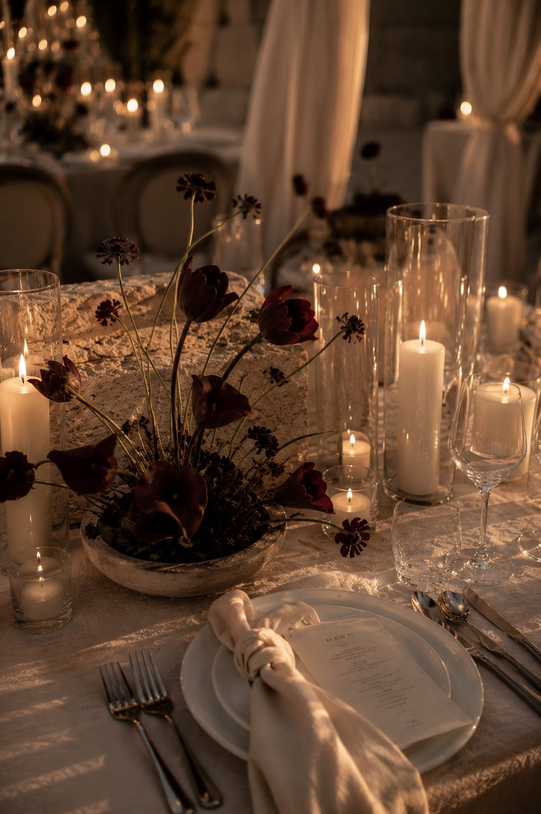
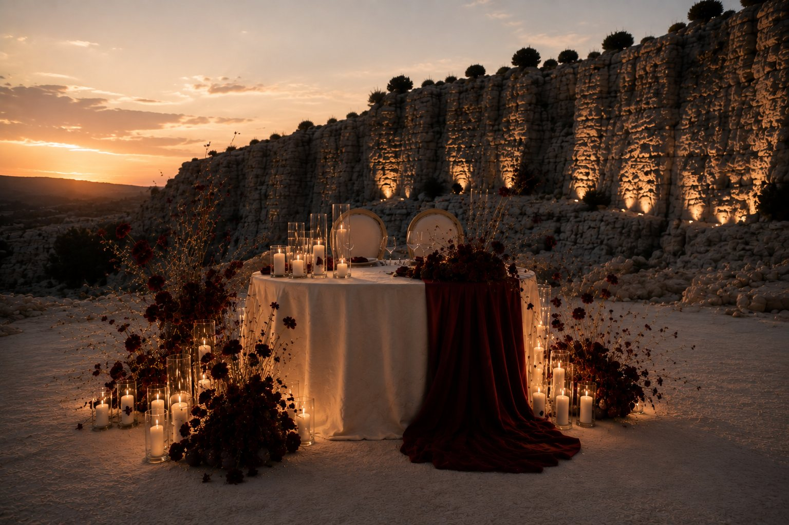
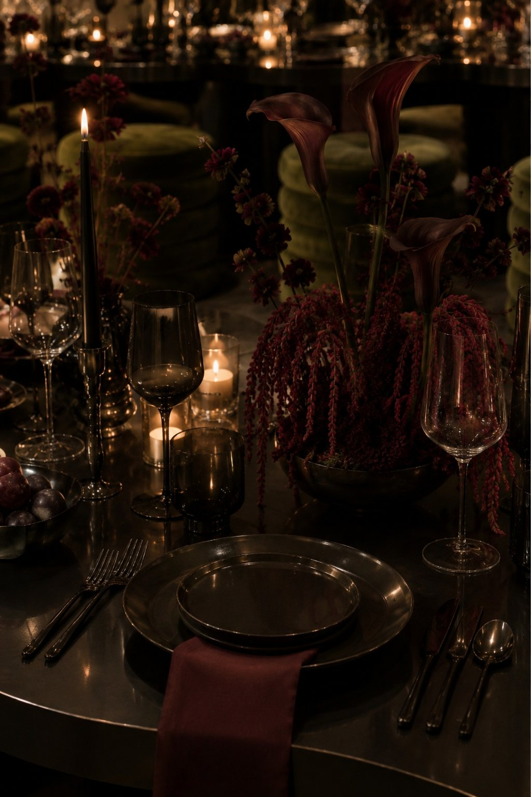
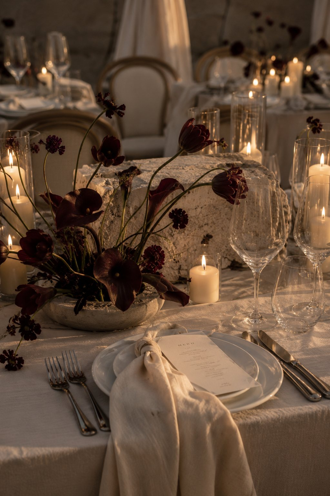
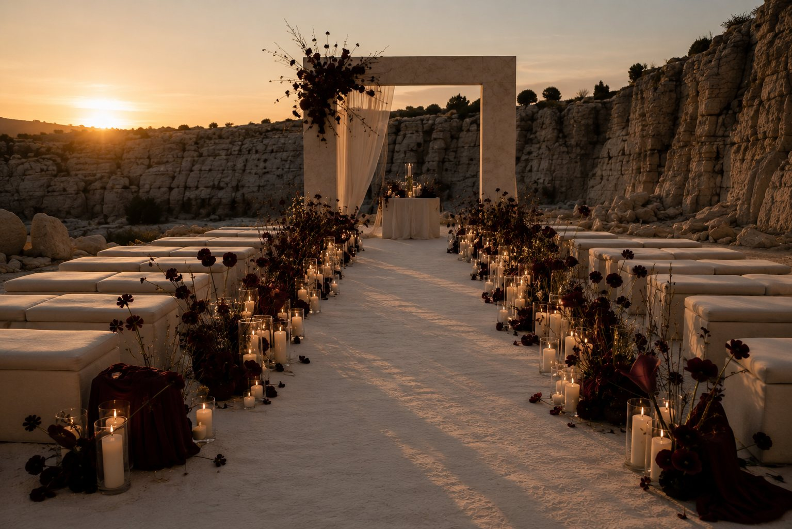

The series stays close to burgundy, ivory, shadow and architectural warmth, so ceremony and table read as one world.




No. 04 / Candlelit Stone Reception
A darker celebration study built through stone, candlelight and deep floral colour.

The series stays close to burgundy, ivory, shadow and architectural warmth, so ceremony and table read as one world.



